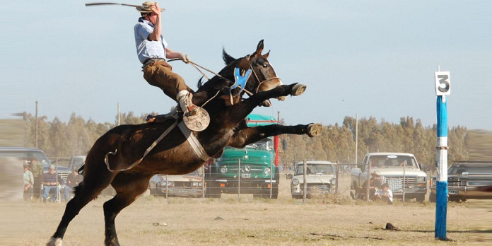

¿Qué hacer?
En principio disfrutar la magia, la tranquilidad y la hospitalidad de nuestra gente.
Las actividades criollas, la paz del campo y la buena gastronomía son una buena excusa para descansar y disfrutar.
GOUIN
GOUIN
GOUIN
GOUIN

Destrezas gauchas